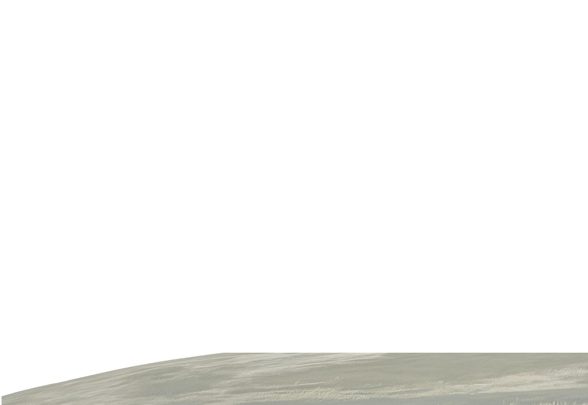

Maxime Cordy
2026



En 1995, William reçoit son diagnostic


Il peint aussi ce portrait, le dernier de Patricia. Les traits deviennent de moins en moins sûrs. La couleur de ses cheveux ne reflète plus la réalité, et son visage apparaît aux proportions démesurées.